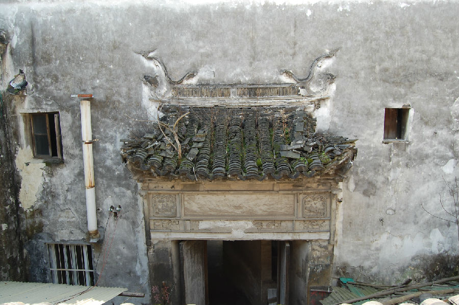

嘉兴市文物保护网 · 市级文物保护点 · 2020-11-03 · 原文

四喜街宋氏老宅位于嘉兴市秀洲区王店镇四喜街151号市河北侧。据房屋梁架特征判断为清代建筑。原为宋氏祖居，解放初土改后改做旅馆“为民招待所”。老宅原有布局不明，现存三进。坐北朝南，砖木结构，抬梁式为主。通面阔8.9米，第一进两层，进深7.5米，第一进与第二进之间有一天井，进深2.76米。第二进为两层，一层已改建，进深7.2米，第二进与第三进之间有一天井，进深4.32米，天井南侧有一砖雕门楼，但雕花已毁。屋顶为硬山顶，马头墙为三叠，有方形斗拱，梁架等处有雕花，天井青石铺地。老宅在嘉兴现存的古建民居中年代较早，方形斗拱结构建筑存世较少，雕饰精美，具有较高的历史、科学和艺术价值。2010年公布为嘉兴市文物保护点。